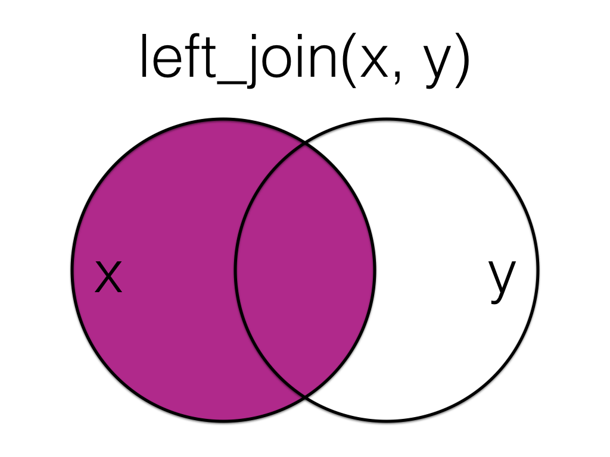

orders_B <-tibble(id =c(2, 3, 4, 4, 5, 5, 6, 6, 7),items =c(10, 18, 21, 23, 9, 11, 11, 12, 3))# add a new column and orders_B %>%mutate(satisfaction =NA,number =1:9)
# A tibble: 9 × 4
id items satisfaction number
<dbl> <dbl> <lgl> <int>
1 2 10 NA 1
2 3 18 NA 2
3 4 21 NA 3
4 4 23 NA 4
5 5 9 NA 5
6 5 11 NA 6
7 6 11 NA 7
8 6 12 NA 8
9 7 3 NA 9
##reassign to keep it! orders_B <- orders_B %>%mutate(satisfaction =NA,number =1:9)###Make numbers into different data type orders_B %>%mutate(numbers_as_strings =as.character(number))
# A tibble: 9 × 5
id items satisfaction number numbers_as_strings
<dbl> <dbl> <lgl> <int> <chr>
1 2 10 NA 1 1
2 3 18 NA 2 2
3 4 21 NA 3 3
4 4 23 NA 4 4
5 5 9 NA 5 5
6 5 11 NA 6 6
7 6 11 NA 7 7
8 6 12 NA 8 8
9 7 3 NA 9 9
#You can even do MATHH! orders_B %>%mutate(items_minus_id = items - id)
# A tibble: 9 × 5
id items satisfaction number items_minus_id
<dbl> <dbl> <lgl> <int> <dbl>
1 2 10 NA 1 8
2 3 18 NA 2 15
3 4 21 NA 3 17
4 4 23 NA 4 19
5 5 9 NA 5 4
6 5 11 NA 6 6
7 6 11 NA 7 5
8 6 12 NA 8 6
9 7 3 NA 9 -4
SO MANY JOINS FROM LEFT TO RIGHT AND INNER AND EVERYHING!
Here we will look at the two tables and merge the relevant information that we want this way we can draw some conclusions about the data such as how many times were packaged by Postcode, City, and ID number!

###left Joincustomers
# A tibble: 5 × 3
id city Postcode
<int> <chr> <chr>
1 1 Port Ellen PA42 7DU
2 2 Dufftown AB55 4DH
3 3 <NA> <NA>
4 4 Aberlour AB38 7RY
5 5 Tobermory PA75 6NR
left_data <-left_join(customers, orders, by ="id")
Warning in left_join(customers, orders, by = "id"): Each row in `x` is expected to match at most 1 row in `y`.
ℹ Row 4 of `x` matches multiple rows.
ℹ If multiple matches are expected, set `multiple = "all"` to silence this
warning.
left_data
# A tibble: 7 × 4
id city Postcode items
<dbl> <chr> <chr> <dbl>
1 1 Port Ellen PA42 7DU NA
2 2 Dufftown AB55 4DH 10
3 3 <NA> <NA> 18
4 4 Aberlour AB38 7RY 21
5 4 Aberlour AB38 7RY 23
6 5 Tobermory PA75 6NR 9
7 5 Tobermory PA75 6NR 11
left2_data <-left_join(orders, customers, by ="id")
##Right Joincustomers
# A tibble: 5 × 3
id city Postcode
<int> <chr> <chr>
1 1 Port Ellen PA42 7DU
2 2 Dufftown AB55 4DH
3 3 <NA> <NA>
4 4 Aberlour AB38 7RY
5 5 Tobermory PA75 6NR
right_data <-right_join(customers, orders, by ="id")
Warning in right_join(customers, orders, by = "id"): Each row in `x` is expected to match at most 1 row in `y`.
ℹ Row 4 of `x` matches multiple rows.
ℹ If multiple matches are expected, set `multiple = "all"` to silence this
warning.
inner_data <-inner_join(customers, orders, by ="id")
Warning in inner_join(customers, orders, by = "id"): Each row in `x` is expected to match at most 1 row in `y`.
ℹ Row 4 of `x` matches multiple rows.
ℹ If multiple matches are expected, set `multiple = "all"` to silence this
warning.
##FULL JOIN! ADD EVERYTHING! full_data <-full_join(customers, orders, by ="id")
Warning in full_join(customers, orders, by = "id"): Each row in `x` is expected to match at most 1 row in `y`.
ℹ Row 4 of `x` matches multiple rows.
ℹ If multiple matches are expected, set `multiple = "all"` to silence this
warning.
This can be very useful when we want specific data to be within our data set in this scenario we are filtering out any values within the city and times columns = NA by using a Boolean variable to check.
full_data <-full_join(customers, orders, by ="id") #Creates a table where all units of data are brought together, the variables customer,orders, and labeled by ID
Warning in full_join(customers, orders, by = "id"): Each row in `x` is expected to match at most 1 row in `y`.
ℹ Row 4 of `x` matches multiple rows.
ℹ If multiple matches are expected, set `multiple = "all"` to silence this
warning.